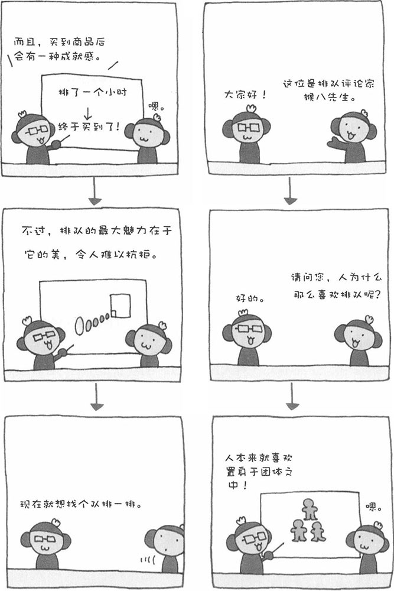

人有一种喜欢排队的心理。有些人为了买到演唱会门票或者自己喜欢的商品，不惜排几个小时的队，这是为什么呢？也许很多人会回答："演唱会（或商品）值得我排那么长时间的队。"果真是这样吗？
当然，商品本身具有一定的魅力是必须的。除此之外，长长的队伍本身也具有吸引力。当我们看到很多人排起长队购买某一种商品时，心中就会想："有这么多人买，一定是种非常好的商品"。而且，与其他人做一样的事情时，人会产生一种安心感。心理学把这种行为称为"同调行为"。此外，排很长时间的队买到商品，能给人一种成就感，或者说获得一种满足感。
当然，对于排队这种行为，也存在个人差异。更有趣的是，还存在地域性差异。据说，日本关东人就比关西人更容易加入到排队的队伍中来。关东人有一种强迫性观念，他们认为如果不加入大家的购买队伍，自己也许会错过一件好商品。反过来说，通过排长队买来的商品，可以更加放心。
近年来，杂志和电视上出现了很多直邮购物的广告，而且一经推出就备受欢迎。人会觉得对商品的质量、设计等进行判断非常麻烦，所以干脆不去自己作出判断，而是选择大家都购买的商品。人们认为一种商品如果有很多人购买，其质量和设计等肯定非常好。比如，大家都愿意购买名牌商品，这不仅仅是因为名牌商品的品质有保证，而且它的价格较贵，是一种身份和地位的象征。同理，购买的人排起一条长队，本身就是一种广告宣传，排队也成了"名牌"商品的一部分，只是大家为此消费的不是金钱，而是时间。
